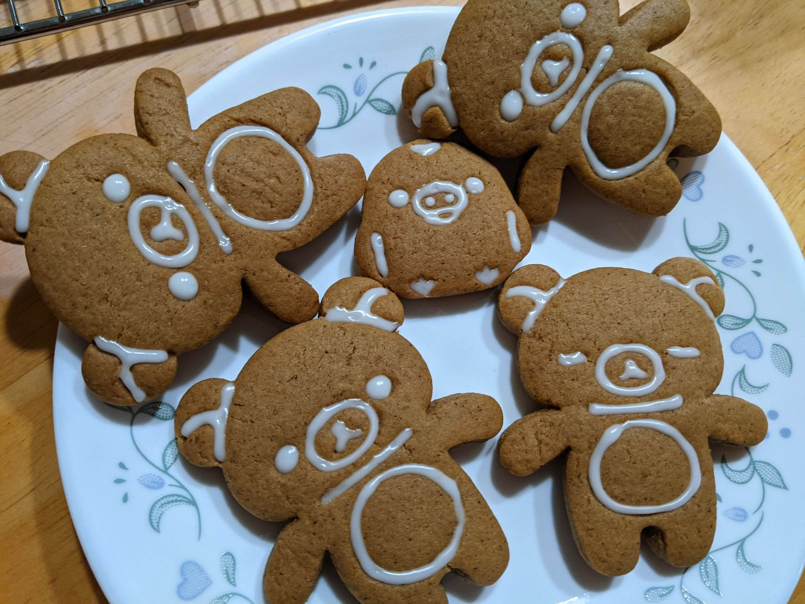

The holiday season is a time of great cheer and warmth. Unfortunately this season is a major struggle for many of us and it will definitely be difficult to look towards the brightside during these times. To remind myself of things that I am grateful for and to lift my own spirits I want to list a few things.
I am grateful for my and my family's health!
I have been largely unaffacted by these circumstances, other than a change in lifestyle I am safe and so is my family.
I am grateful for friends!
I have so many loving friends that it is hard to think of unhappy things thanks to their love and support.
I am grateful for video games!
They're pretty great. Honestly they've provided me plenty of distraction from reality during this time.
I am grateful for food!
I have food to eat and a place to live. What more can I reasonably ask for?
 Here are some gingerbread cookies I recently made.